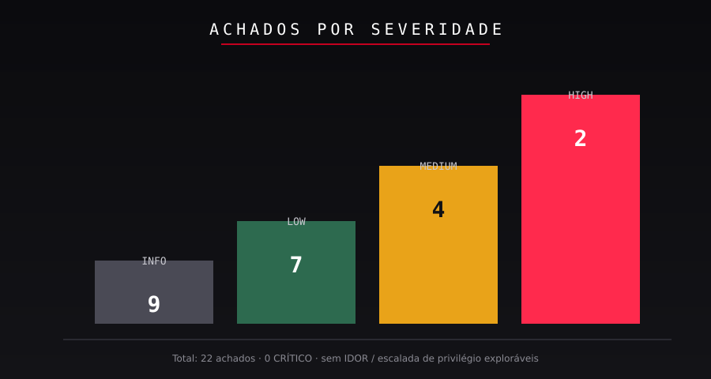
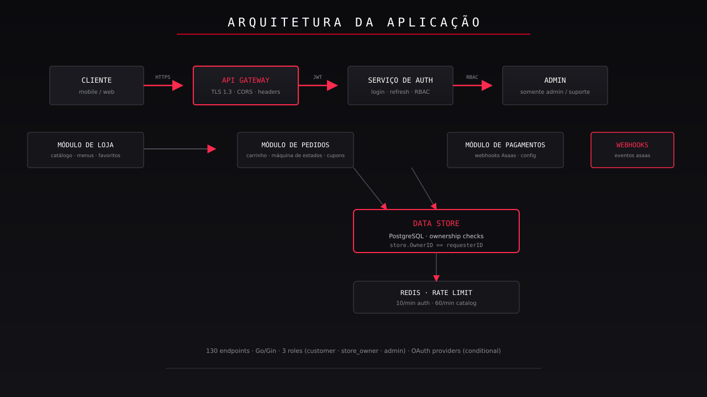
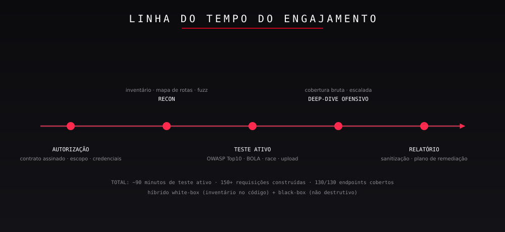
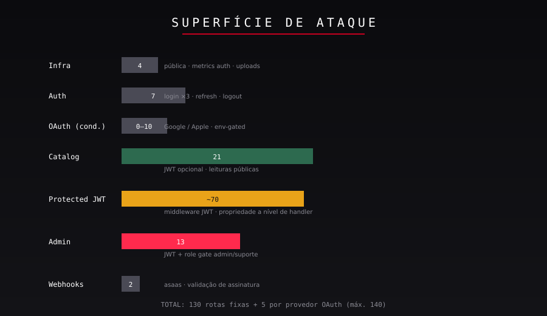
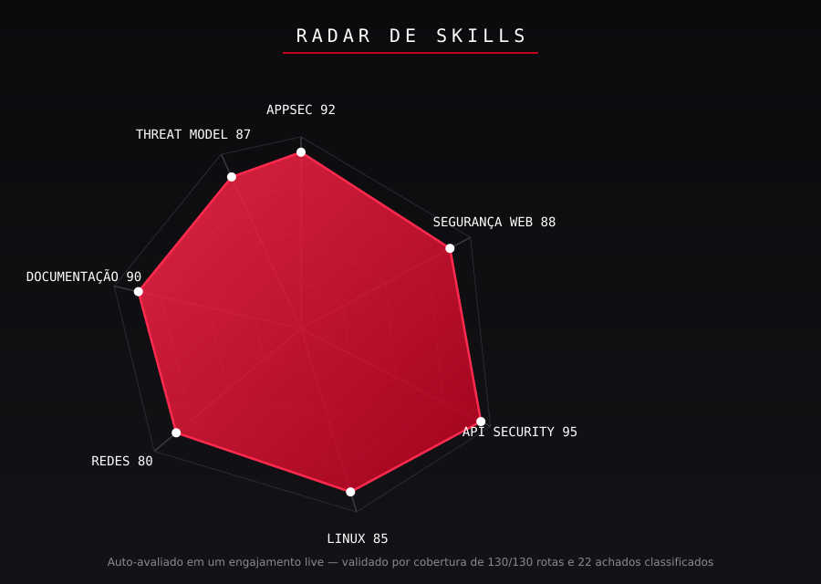

02 / CONFIDENCIALIDADE & ESCOPO
Edição Pública Sanitizada
This document is a deliberately sanitized edition of an authorized
penetration-test report. All client-identifying information has been removed or masked:
product and company names, real hostnames, IP addresses, tax identifiers (CNPJ), e-mail
addresses, JWT values, request identifiers, and secrets.
A substância técnica — achados, severidade, formas de evidência e remediação — é
preservada intacta para que o relatório continue sendo uma verdadeira demonstração de
habilidade em assessment.
Relatório Original — Confidencial
O relatório completo do engajamento (nome do cliente, evidência completa, detalhe de
exploit live) não faz parte deste repositório. Pertence ao cliente e está protegido
pelos termos de não-divulgação do engajamento. Qualquer reprodução deste portfólio está
limitada ao conteúdo sanitizado apresentado aqui.
Autorização & Regras de Engajamento
| Item | Detalhe |
|---|
| Autorização | Autorização formal de pentest, assinada |
| Modelo | Híbrido: white-box (inventário no código) + black-box (teste em runtime) |
| Roles usadas | customer / store_owner / admin (credenciais de pentest, rotacionadas) |
| Fora de escopo | Engenharia social, ataques a terceiros, DoS volumétrico, persistência |
| Segurança de dados | Sem dados reais; indisponibilidade temporária e reset autorizados; artefatos limpos |
03 / SUMÁRIO
Registro completo de achados
Os 22 achados (incluindo LOW / INFO e controles positivos) estão listados
em findings/severity-summary.md no repositório. As páginas 09–16 trazem os oito
cards de maior prioridade.
04 / RESUMO EXECUTIVO
Um assessment de segurança autorizado de uma API REST de SaaS de delivery de comida
(Go / Gin) encontrou nenhuma vulnerabilidade Crítica e uma postura de segurança
geralmente forte. Dois achados HIGH foram identificados — ambos são
regras de negócio ausentes, não bugs de framework: uma lacuna de role-gate que
permite um customer virar lojista, e uma constraint de unicidade ausente que permite registro em massa
com um único identificador fiscal. Nenhum IDOR explorável, escalada de privilégio ou injeção foi encontrado.

Top 3 prioridades
- F-01 (HIGH, CVSS 8.8): qualquer customer autenticado pode criar uma
loja e escalar para
store_owner. Aplicar um role gate no POST /store.
- F-02 (HIGH, CVSS 8.1): o mesmo CNPJ pode ser registrado um número ilimitado
de vezes em paralelo. Adicionar
UNIQUE(cnpj) + conflito 409.
- F-04 (MEDIUM, CVSS 6.5): null-byte e payloads de 5 KB causam
500
bruto. Adicionar limite de tamanho (413) e decode robusto de entrada.
✔ Pontos fortes dos controles:
Assinatura/claims do JWT validadas (alg:none rejeitado) · RBAC & propriedade estritos (sem IDOR) ·
uploads com validação por decode (SVG/HTML/polyglots todos bloqueados) · CORS restritivo · TLS 1.3 +
HSTS + CSP default-src 'none' · auth com rate limit de 10/min.
05 / ARQUITETURA DA APLICAÇÃO
O alvo é um SaaS de delivery de comida multi-tenant: customers pedem de lojas de lojistas;
lojas gerenciam menus, pedidos e pagamentos; um painel admin cuida das operações da plataforma.
Uma API Go / Gin compartilhada atende os três front-ends além de uma camada de login OAuth.

Inventário de rotas (autoritativo — do código-fonte)
| Grupo | Rotas aprox. | Auth | Exemplos |
|---|
| Infra | 4 | nenhuma | /health |
| Auth | 7 | public | /login/{role}, /auth/refresh |
| OAuth | 0–10 | pública | Google / Apple (env-gated) |
| Catálogo | ~21 | JWT opcional | /cuisines, /stores, menus, items |
| Protegido JWT | ~70 | obrigatória | pedidos, favoritos, endereços, cupons |
| Admin | 13 | role admin | /admin/dashboard, usuários, lojas |
| Webhooks | 2 | assinatura | /webhooks/billing, /webhooks/{id} |
06 / METODOLOGIA

Fases
| Fase | Trabalho realizado | Resultado |
|---|
| 1. Inventário | Mapa de rotas do código (RegisterRoutes); escopo & credenciais | 130 rotas classificadas |
| 2. Recon | Handshake TLS, headers, fingerprint, matriz de métodos | TLS 1.3, HSTS, CSP 'none' |
| 3. Auth | Fluxos de login, adulteração de JWT, vínculo de refresh, loop de rate-limit | 10/min; alg:none rejeitado |
| 4. A01 Acesso | Bateria IDOR cross-role: users, stores, pedidos, endereços | Tudo bloqueado 403 |
| 5. Negócio | Idempotência, cupons, auto-pedido, auto-registro de loja | F-01, F-02, F-06 encontrados |
| 6. Upload | Bateria de MIME sniff: SVG, HTML, polyglot, null-byte, traversal | Todos 400 — validação por decode |
| 7. Race | Bursts paralelos: favorito, pedido, loja/CNPJ | Favoritos/pedidos idempotentes; race de CNPJ quebrada |
| 8. Automação | ffuf (38 paths) + Nuclei (misconfig/exposures/cves) | Apenas headers ausentes (info) |
| 9. Limpeza | Artefatos revertidos, aviso de rotação de credenciais | Ambiente limpo |
Cobertura OWASP 2021
As 10 categorias exercitadas com um plano de teste dedicado para cada — A01 Broken
Access Control, A02 Cripto, A03 Injeção, A04 Insecure Design, A05 Misconfiguração, A06
Componentes Vulneráveis, A07 Auth, A08 Integridade (webhooks), A09 Logging, A10 SSRF.
08 / SUPERFÍCIE DE ATAQUE
A API é o ponto único de entrada para três front-ends. A superfície foi mapeada exaustivamente
pelo inventário do código e depois validada em runtime.

Resumo de exposição
| Classe de endpoint | Risco | Comentário |
|---|
/health | Info | Apenas telemetria de uptime/latência; sem vazamento de versão |
| Auth (login/refresh) | Low | Rate limit de 10/min; sem lockout observado, mas também sem bypass |
| Catálogo (público) | Low | Somente leitura; JWT opcional e ignorado quando inválido (F-10) |
| Protegido JWT | Medium | RBAC forte; o risco são as duas lacunas de regra de negócio (F-01/F-02) |
| Admin | Low | Gate estrito de role admin; UUID inválido → 500 (F-05) |
| Webhooks | Low | Billing valida a assinatura primeiro; webhook de loja vaza existência (F-07) |
| Uploads | Low | Validação MIME por decode bloqueia todos os payloads testados |
09 / REGISTRO DE ACHADOS
F-01 · Controle de Acesso Quebrado
F-01
Descrição
Qualquer customer autenticado pode chamar POST /store e receber um
200 com um store_id válido — ganhando imediatamente capacidades de
store_owner (CRUD de menu, gestão de pedidos, acesso a webhooks). O endpoint não tem
role gate; só verifica autenticação.
Impacto
Escalada vertical de privilégio: controle total de lojista de uma loja, seu menu, pedidos e
configuração de pagamento sem ser um lojista aprovado. Combinado com F-02, é possível a criação em
massa de lojas de propriedade do atacante.
Evidência (sanitizada)
POST /store
Authorization: Bearer <customer_jwt>
{"cnpj":"19.131.243/0001-97","name":"PORTFOLIO-STORE","category":"PIZZA"}
→ 200 {"store_id":"xxxxxxxx-xxxx-…","cnpj":"…","role_now":"store_owner"}
Remediação
Aplicar role == store_owner antes da criação de loja (403), ou rotear a criação
por um workflow de aprovação. Adicionar teste de regressão afirmando customer → 403.
10 / REGISTRO DE ACHADOS
F-02 · Lógica de Negócio — Duplicação de CNPJ
F-02
Descrição
O mesmo CNPJ pode ser registrado em um número ilimitado de lojas. Tentativas sequenciais
retornam 200 cada; bursts 10× paralelos com um CNPJ também retornam todos
200 — provando que não há verificação de unicidade nem lock, não apenas uma janela de race.
Impacto
Criação em massa de lojas com um único identificador fiscal: habilita fraude, onboarding de
lojistas fictícios, abuso de avaliações/cupons e manipulação de estoque/billing. F-01 agrava.
Evidência (sanitizada)
# 10× parallel
for i in $(seq 1 10); do curl -sk -X POST https://api.example.com/store \
-H "Authorization: Bearer <store_jwt>" -d '{"cnpj":"19.131.243/0001-97","name":"S'"$i"'","category":"PIZZA"}' & done; wait
→ 10 × HTTP 200, 10 distinct store_ids
Remediação
Adicionar constraint UNIQUE(cnpj); retornar 409 cnpj already exists; adicionar
um teste de regressão de race (burst paralelo).
11 / REGISTRO DE ACHADOS
F-03 · XSS Armazenado (candidato)
F-03
Descrição
PATCH /user/profile armazena "name":"<script>alert(1)</script>"
literalmente (200). A API o escapa em JSON, então ele não executa
nas respostas da API. O risco existe apenas se algum front-end renderizar este campo como HTML.
Impacto
XSS armazenado se um consumidor renderizar o campo sem sanitização: roubo de sessão/cookies,
overlays de phishing ou comprometimento do dashboard da loja. Avaliado como MEDIUM (condicional).
Evidência (sanitizada)
PATCH /user/profile {"name":"<script>alert(document.cookie)</script>"} → 200
GET /user/xxxxxxxx-… → {"name":"\u003cscript\u003ealert(document.cookie)\u003c/script\u003e"}
SSTI probes {{7*7}}, ${7*7}, <%=7*7%> → stored literally (NO template injection) ✔
Remediação
Sanitizar na escrita (remover <>) ou aplicar output-encoding em todo consumidor.
Adicionar CSP que bloqueie script inline como defense-in-depth.
12 / REGISTRO DE ACHADOS
F-04 · 500 Descontrolado em Null-Byte / Payload Grande
F-04
Descrição
PATCH /user/profile com "name":"teste\u0000" ou um valor de 5000 chars
retorna 500 bruto em vez de erro de validação. Não há limite de tamanho de payload
nem tratamento gracioso de null bytes.
Impacto
Próximo a confiabilidade/DoS: requisições malformadas repetidas elevam a taxa de erro e poluem
o monitoramento; 500s descontrolados podem mascarar incidentes reais e são um sinal
de saúde do código.
Evidência (sanitizada)
PATCH /user/profile {"name":"teste\u0000"} → 500 internal error
PATCH /user/profile {"name":"A×5000"} → 500 internal error (no 413)
PATCH /user/profile {"name":12345} | [] | {} → 400 invalid request body ✔ (typing OK)
Remediação
Rejeitar null bytes (400), aplicar limite de corpo de 1 MB retornando 413
e adicionar um handler global de erros que retorne erros controlados em vez de 500 bruto.
13 / REGISTRO DE ACHADOS
F-05 · 500 Não Tratado em Menu / Categoria / Lookup Admin
F-05
Descrição
UUIDs inválidos em menu/category e admin/user/{bad} retornam
500 em vez de 400/404. Os caminhos fazem parse de um UUID
malformado e caem em um erro descontrolado.
Impacto
Próximo a divulgação de informação: 500s vazam o comportamento interno do handler, geram ruído
de alertas e indicam validação ausente na fronteira do handler.
Evidência (sanitizada)
GET /menu/category/not-a-uuid → 500 internal error
GET /admin/user/not-a-uuid → 500 internal error (admin role)
GET /store/not-a-uuid/order → 403 (role gate runs BEFORE parse) ✔
Remediação
Validar a sintaxe do UUID antes da lógica do handler (400); retornar 404 quando
o recurso realmente não existir; adicionar um middleware global de recover.
14 / REGISTRO DE ACHADOS
F-06 · Rate Limit Ausente na Criação de Loja
F-06
Descrição
Os endpoints de auth têm rate limit de 10/min, mas POST /store não. 32 criações de loja
em menos de 60 segundos produziram zero respostas 429.
Impacto
Onboarding em massa de lojas fictícias (agrava F-01/F-02), inchaço do banco e fraude em
chamados de suporte.
Evidência (sanitizada)
# 32 creations < 60s (2 init + 10 race + 20 stress)
for i in $(seq 1 20); do curl -sk -o /dev/null -w '%{http_code}\n' -X POST \
https://api.example.com/store -H "Authorization: Bearer <store_jwt>" \
-d '{"cnpj":"10.000.000/0001-'"$i"'","name":"S'"$i"'","category":"PIZZA"}'; done
→ 20 × HTTP 200 (zero 429)
Remediação
Aplicar o mesmo limiter de 10/min à criação de loja, chaveado por usuário + IP, com uma folga
de burst para onboarding legítimo; alertar em picos.
15 / REGISTRO DE ACHADOS
F-07 · Enumeração de Existência de Loja via Webhook
F-07
Descrição
POST /webhooks/{id} retorna 404 store payment config not found quando
o id da loja é real mas sem config, versus 401 invalid webhook signature no
webhook de billing. O lookup da config roda antes da validação da assinatura.
Impacto
Oráculo de existência de loja sem autenticação; habilita engenharia social direcionada e recon
para abuso de F-01/F-02.
Evidência (sanitizada)
POST /webhooks/xxxxxxxx-xxxx-… (no signature) → 404 store payment config not found
POST /webhooks/billing (no signature) → 401 invalid webhook signature
# differential = existence oracle
Remediação
Validar a assinatura antes do lookup no banco e retornar um 401
genérico para todos os modos de falha.
16 / REGISTRO DE ACHADOS
F-10 · Catálogo Ignora JWT Inválido
F-10
Descrição
Endpoints públicos de catálogo aceitam um JWT inválido/expirado/lixo sem erro
e servem os dados públicos — o token é silenciosamente ignorado. O comportamento é correto para os
dados (públicos), mas a ignorância silenciosa mascara problemas de token dos clientes.
Impacto
Low: sem vazamento de dados (catálogo é público). É uma falha de observabilidade e consistência —
os clientes não conseguem perceber que o token está quebrado.
Evidência (sanitizada)
GET /cuisines Authorization: Bearer garbage.token.here → 200 (public data served)
GET /cuisines Authorization: Bearer <expired_jwt> → 200 (same)
GET /cuisines no header → 200 (same)
Remediação
Decidir a política: retornar 401 para token presente-mas-inválido
nas rotas de catálogo (ou documentar a ignorância explicitamente). No mínimo, logar a anomalia.
17 / CONTROLES DE SEGURANÇA VALIDADOS
Um assessment tem duas metades: encontrar o que está quebrado e provar o que funciona.
Cada controle abaixo foi ativamente atacado e se sustentou.
Integridade do JWT — ✔ alg:none,
claims adulteradas e tokens expirados todos rejeitados com 401. HS256 aplicado.
RBAC & propriedade — ✔ 20+ tentativas
cross-role e cross-objeto em usuários, lojas, pedidos, endereços, cupons → todas 403. Sem IDOR.
Uploads — ✔ SVG, HTML, PNG falso,
polyglot, extensão dupla, null-byte e arquivos de traversal todos 400 — o servidor
decodifica a imagem, não apenas o header.
CORS — ✔ sem reflexão de origin;
Origin não permitida → 403.
Transporte — ✔ somente TLS 1.3,
TLS_AES_128_GCM_SHA256, HSTS + CSP default-src 'none' + XFO DENY.
Rate limiting (auth) — ✔ 10/min aplicado;
spoofing de XFF (12 IPs rotativos) não burlou (F-21 positivo).
Sem roteamento por Host-header — ✔
Host: evil.com → 404, vhost estrito (F-21).
Idempotência (favoritos/pedidos) — ✔ 10×
paralelos → um único favorito, um único id de pedido.
Cross-check de automação — ✔ ffuf + Nuclei
não encontraram exposição adicional (F-22 positivo).
19 / MAPEAMENTO MITRE ATT&CK
Achados mapeados para o ciclo de vida do adversário para mostrar prioridades de detecção/monitoramento.
| Tática | Técnica | Achado / controle |
|---|
| Recon | T1595 / T1589 | F-07 oráculo de existência via webhook |
| Acesso Inicial | T1078 (contas válidas) | F-01 caminho de escalada de loja |
| Escalada de Privilégio | T1548.002 | F-01 customer → store_owner |
| Impact / DoS | T1499 / T1499.001 | F-02, F-04, F-05, F-06 |
| Acesso a Credenciais | T1110 (brute force) | F-06, F-21 (mitigado: 10/min) |
| Execução | T1059.007 (JS) | F-03 candidato a stored-XSS |
| Coleta | T1557 | Nenhum encontrado — sem BOLA/IDOR |
Recomendações de detecção
- Alertar em >10
POST /store por usuário por minuto (F-06/F-02).
- Correlacionar bursts de 404 em
POST /webhooks/{id} → assinatura de recon (F-07).
- Monitorar
500s repetidos de payloads malformados (F-04/F-05) como ruído de scan.
- Alertar em uma única conta emitindo JWTs de
customer e store_owner (F-01).
21 / LIÇÕES APRENDIDAS
1. Controles positivos valem tanto quanto achados
Os resultados negativos — cada IDOR, polyglot de upload e tentativa de CORS que foi bloqueada —
são evidência de que os controles funcionam. Um relatório que prova que as defesas
funcionam é mais crível do que um que só lista bugs.
2. Teste o modelo de negócio, não só o framework
Os dois HIGHs (F-01, F-02) eram regras de negócio ausentes — sem role gate, sem
constraint de unicidade. Nenhum scanner encontra isso. Essa é a diferença entre rodar ferramentas e
conduzir um assessment.
3. Race conditions precisam de teste paralelo, não sequencial
A duplicação de CNPJ só se tornou comprovável com bursts paralelos de 10×/20×. Um re-teste sequencial
teria mostrado "um por chamada" e perdido completamente o lock ausente.
4. Severidade é sobre contexto de negócio
O mesmo rate limit ausente é LOW num caminho de leitura e MEDIUM num caminho de escrita que habilita
fraude em massa. Contexto — não tabelas de consulta — determina a severidade.
5. Entrega é um produto
Um plano de remediação de 7/30/60/90 dias, um roadmap com donos e uma seção clara de
autorização/escopo tornam um pentest acionável. O relatório não é o entregável —
a decisão que ele habilita é.
22 / TECNOLOGIAS DEMONSTRADAS
GO / GIN
Stack alvo analisada
JWT / HS256
Teste de auth & token
TLS 1.3
Validação de transporte
Disciplinas de assessment exercitadas
- Web App Security: bateria OWASP Top 10, amostragem de injeção, XSS, CORS, CSP, headers
- API Security: inventário de 130 rotas, RBAC/propriedade (BOLA/IDOR), mass-assignment, matriz de métodos
- Lógica de Negócio: idempotência, race conditions, máquinas de estado, auto-pedido
- Criptografia: adulteração de algoritmo JWT, revisão de cipher TLS, vínculo de refresh token
- Linux & Automação: curl, OpenSSL, ffuf, Nuclei, shell scripting paralelo
- Documentação & Relatório: sanitização, mapeamento CVSS/CWE/OWASP/ATT&CK, roadmap
Resultado a nível de framework
O framework (Gin) se sustentou: os achados significativos estavam na camada de negócio
(política de autorização, constraints de integridade de dados), não no framework web. Esse é o perfil de um
codebase maduro e de um assessment direcionado, não de chumbo grosso.
23 / RADAR DE SKILLS

Auto-avaliado em um engajamento live — fundamentado em cobertura de 130/130
rotas, 150+ requisições construídas, 10/10 categorias OWASP e 22 achados classificados.
24 / SOBRE ESTE PROJETO
Por que este portfólio existe
Este repositório é uma demonstração de engenharia de segurança ofensiva:
como um engajamento autorizado real é planejado, executado, documentado, sanitizado e transformado
em um roadmap acionável — sem nunca expor o cliente.
O que está incluído
- findings/ — 22 cards individuais de achados (F-01…F-22 + registro)
- evidence/ — trechos canônicos sanitizados de requisição/resposta
- assets/ — 9 diagramas customizados (arquitetura, superfície de ataque, fluxos…)
- methodology.md / timeline.md / tools.md — o "como"
- hardening-roadmap.md — 24 ações priorizadas com donos
- portfolio-notes.md — revisão sênior do relatório original + lições
O que é deliberadamente NÃO incluído
- Nome do cliente, hostnames reais, IPs, CNPJs, e-mails, tokens, segredos
- Instruções de exploit live contra o ambiente de produção
- Qualquer conteúdo sob o NDA do engajamento original
Contato / roles alvo
Security Engineer · Penetration Tester · Security Consultant · AppSec Engineer.
Foco: API security, segurança de aplicações web, testes de lógica de negócio e relatórios de segurança.
25 / CONCLUSÃO
A API avaliada é fundamentalmente sólida: segurança de transporte forte,
integridade de JWT aplicada, RBAC/propriedade estritos, uploads validados por decode e CORS
restritivo. Nenhuma vulnerabilidade Crítica e nenhum IDOR explorável, injeção ou cadeia de escalada de
privilégio foi encontrada.
O risco residual se concentra em duas lacunas de regra de negócio (F-01 role gate,
F-02 unicidade de CNPJ) que habilitam fraude de lojistas em escala. Ambas são baratas de corrigir e
são as prioridades máximas do roadmap. Todos os demais achados são melhorias de hardening e
confiabilidade.
— FIM DO RELATÓRIO —
Relatório de Avaliação de Segurança · Edição Pública de Portfólio · Versão 1.0 · 2026-08-29
Sanitizado para distribuição pública · O relatório original permanece confidencial